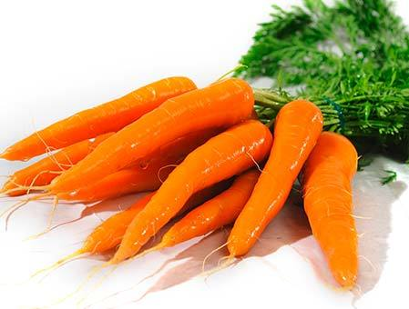
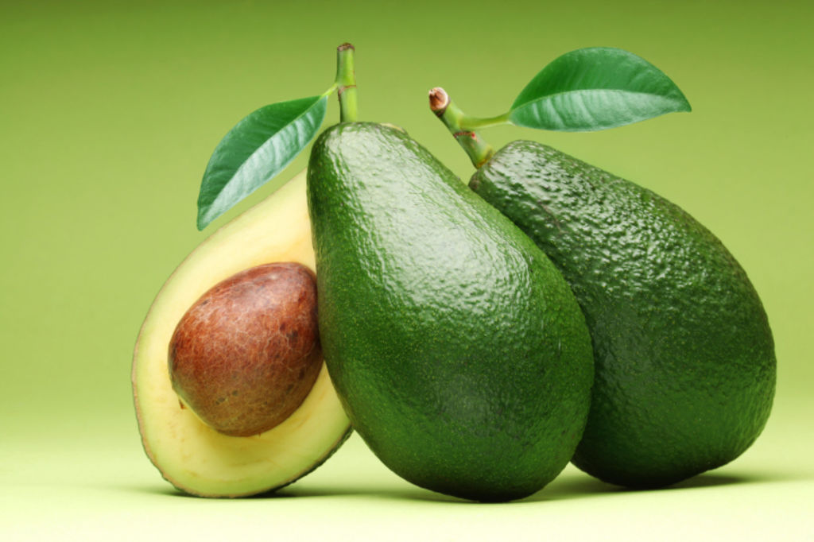
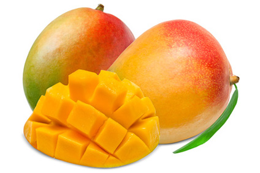

Que contient les fruits que nous mangeons au quotidien ?


Baname
Une étude a indiqué qu’une consommation élevée de bananes pendant un repas réduisait les radicaux libres présents dans le corps, 2 heures après le repas...
Lire tous

Avocat
Les antioxydants sont des composés qui protègent les cellules du corps des dommages causés par les radicaux libres...
Lire tous

Mangue
La mangue, de même que la goyave et le litchi, se démarque grandement des autres fruits tropicaux par son contenu élevé en...
Lire tous
Ananas
Certaines études ont montré que, grâce à ses propriétés anti-inflammatoires et analgésiques, la broméline, très présente dans l’ananas, pourrait s’avérer...
Lire tous